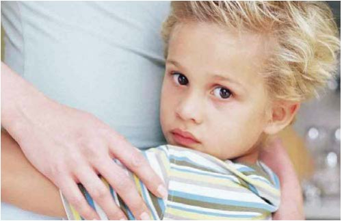
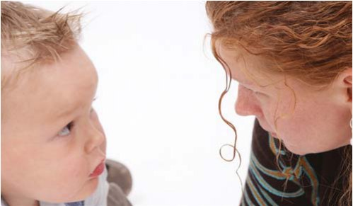

Своя справа · журнал «ДентАрт» 2014 №2 (75)
Суб'єктивно «важкі» діти у практиці стоматолога
SUBJECTIVELY «DIFFICULT» CHILDREN IN DENTAL PRACTICE
Будь-хто може сердитися — це просто, але розсердитися на того, на кого слід, належною мірою, в належний час, через належну причину і належним чином — це непросто.
Арістотель
Суб'єктивно «важка» дитина — це пацієнт, з яким стоматолог не може встановити контакт і перетворити його негативну стоматологічну поведінку на позитивну внаслідок своєї психолого-педагогічної неспроможності.
Виходячи із запропонованого визначення суб'єктивно «важкої» дитини, можна означити основні напрямки професійного вдосконалення стоматологів в аспекті психології:
- робота стоматолога над собою;
- розпізнання суб'єктивно «важких» дітей;
- алгоритми роботи з ними;
- подолання помилок у повсякденній практиці.
Причини, через які дитина виявляється суб'єктивно «важкою»
Поклади себе під мікроскоп.
Антон Макаренко, педагог і письменник
Причина перша. Дитячий стоматолог не вміє здійснювати психотерапевтичний вплив на дитину.
Психотерапевтичний вплив стоматолога на дитину — використання тих чи інших способів установлення контактів з нею з метою перетворення її негативного настрою і поведінки на позитивну стоматологічну поведінку.
Причина друга. У дитячого стоматолога знижені рівні таких основних професійно-показових психологічних якостей, як дітоцентристська філософія, чадолюбство і позитивна психоенергетика.1
Суб'єктивно «важкою» дитина буде для такого члена команди, який нетерплячий, невитриманий, не володіє емпатією, нездатний розуміти причини неадекватної, на перший погляд, поведінки дітей. У спілкуванні з дітьми виникають серйозні проблеми у людей зарозумілих, з егоїстичними і жорсткими установками до оточуючих. Нерідко не можуть знайти контакт з дитиною дорослі, у яких помітний дефіцит інтелекту. Вони погано відстежують причинно-наслідкові зв'язки у поведінці партнерів по спілкуванню: хто або що стає приводом для конфліктів; не вміють оцінювати вплив своїх вчинків на оточуючих і своєчасно виправляти допущені помилки.
У цілому можна констатувати таке: труднощів у спілкуванні з дітьми найчастіше зазнають дорослі, у яких через ті чи інші причини — інтелектуальні, емоційні чи моральні — порушена схема регуляції міжособистісних стосунків.

Багатьом із нас, дорослих, «важкими» здаються діти, яких ми не розуміємо. Не розуміємо їхніх природних психологічних потреб, мотивів і причин тієї чи іншої поведінки. А якщо ми не розуміємо дитини, то не здатні прийняти її такою, як вона є. І тоді хочеться підпорядкувати її своїй волі, зробити зручною для себе, підігнати під свої уявлення про належне.
Часто дорослому досить зрозуміти свою або чужу дитину і прийняти її як вона є, щоб виник контакт, щоб «важка» дитина виявилася цілком керованою.
Причина третя. Дитячий стоматолог не володіє технологіями роботи з базовими потребами дітей конкретного віку.1
Причина четверта. Дитячий стоматолог вважає «важкою» дитину, яка не вписується в уявлення про «хорошу» дитину.
«Важка» часто означає лише незручна для дорослих. «Треба остерігатися змішувати «хороша» і «зручна», — писав польський педагог Януш Корчак. — Усе сучасне виховання спрямоване на те, щоб дитина була зручною, послідовно, крок за кроком дорослі прагнуть приспати, придушити, винищити все, що є волею і свободою дитини, стійкістю її духу, силою її вимог».
Таким чином, поняття «важка дитина» може бути віддзеркаленням вашої схильності шукати психологічні зручності у стосунках із нею. І буває, що дитина потрапляє в розряд важких тільки тому, що через якісь обставини (наприклад, вроджені властивості темпераменту) вона незручна для дорослих або не вписується у суспільно заданий еталон.
Соціальна мірка «хороша» не підходить для оцінки внутрішніх станів, які закономірно переживає дитина того чи іншого віку.
Причина п'ята. Стоматолог зараховує до «важких» дітей з негативною поведінкою на прийомі.
Найчастіше негативна поведінка — це лише тимчасова захисна реакція дитини на нову обстановку і незнайомих людей. У такому випадку для встановлення контактів з дитиною треба терпляче здійснити поступовий перехід від знайомства з нею до лікування за планом. Для цього буде потрібна певна стратегія взаємодії, що включає експрес-діагностику, терапевтичний союз із батьками, елементи гри, заохочення і тривале співробітництво.
Переконливий доказ ефективності такої стратегії подають у своїй публікації О. М. Леонович та Н. В. Ковальчук (Білорусь).3 Проаналізовано поведінку 85 дітей віком від 1 року до 3-х. До I категорії за шкалою Франкла (абсолютно негативна поведінка) було віднесено 50 дітей (з них 90% — діти до 2-х років); до 2-ої категорії (негативна поведінка) — 35 дітей (більшість після 2-х років). Через 2 роки роботи з цими дітьми наймолодшим було близько 3 років, найстаршим близько 5. З них — жодної дитини, котра відповідала б категоріям 1-2 по Франклу. Діти приблизно порівну розподілилися за категоріями 3 і 4 (позитивна та абсолютно позитивна поведінка).
На думку авторів дослідження, ці дані свідчать про досить високу ефективність використовуваних технік впливу та формування поведінки. Жодну дитину не було відправлено на лікування зубів під наркозом.
Автори дослідження описують клінічний випадок: «Віталик, 2 роки. У перші відвідини, в силу віку, поведінка за шкалою Франкла 2. У перші відвідини пояснили мамі, що нашою метою має стати не лише лікування зубів, але й налагодження з малюком гарних стосунків. Мама згоджується на те, щоб перші два візити стали профілактичними. Далі ми оглядаємо малюка, визначаємо проблеми (уражені верхні центральні різці, вестибулярна і оральна поверхні, незадовільна гігієна), даємо інформацію про ранній дитячий карієс, вручаємо пам'ятку, просимо прийти на наступний прийом із засобами гігієни, зазначеними в пам'ятці, а також подарунком для малюка. Перше відвідування зайняло 10 хв.
Другий візит розпочався з навчання малюка догляду за ротовою порожниною. Мама показує, як вона чистить зуби дитині, ми виправляємо і доповнюємо. У кріслі малюкові запропонували вибрати іграшку і надіти сонцезахисні окуляри. У це відвідування малюкові ми вилікували (з використанням ART-технології) 1 зуб і вручили подарунок. Тривалість візиту становила 20 хвилин. Цікаве спостереження: сонцезахисні окуляри, з одного боку, захищають очі дитини від яскравого світла, а з другого — служать своєрідним відволіканням і дозволяють малюкові немовби сховатися і спокійніше поставитися до лікування зубів. Старші діти так і казали: «Неначе нас тут немає». А стискання гумової іграшки в руках також перерозподіляє увагу дитини і відволікає від основної події. Під час третього відвідування ми вилікували всі інші зуби з використанням ART-технології: всі центральні різці, оральні і вестибулярні поверхні. Тривалість візиту становила 20 хвилин. Вручили подарунок, усі були задоволені. Наступний візит запланували через 2 місяці. Надалі кратність візитів була приблизно 1 раз на 3 місяці: активно використовувалися всі методи домашньої та професійної профілактики. Сьогодні Віталикові майже 4 роки (КПУ = 5). Його поведінка за шкалою Франкла відповідає F 4 — тобто він добре йде на контакт з лікарем».
Таким чином, можна стверджувати, підсумовують автори публікації, що сьогодні дитячому стоматологові цілком доступно ефективно надавати стоматологічну допомогу дітям раннього віку. При цьому важливо поєднувати різні немедикаментозні методи управління поведінкою дитини і щадні, нетравматичні методи лікування.
Типи суб'єктивно «важких» дітей і алгоритми роботи з ними на стоматологічному прийомі
Навіть якщо стоматологічні процедури виконані бездоганно, відвідини можна вважати невдалими, якщо дитина йде з кабінету лікаря в сльозах.
Мак-Ельроу (1895)
У результаті аналізу літератури та попереднього дослідження ми виокремили такі психологічні типи дітей, яких можна віднести до суб'єктивно «важких»:
Ті, що мають негативний стоматологічний досвід — попередній контакт з клінікою або лікарем залишив неприємне враження і відтворюється в умовах нового прийому.
Агресивні — лаються, сперечаються, кусаються, штовхаются, плюються, грюкають дверима, грубо відповідають на запитання лікаря.
Сором'язливі — боязкі, невпевнені, полохливі, мовчазні.
Розбещені — розбалувані, відчувають себе особливими, вибухають, якщо щось суперечить їхнім інтересам.
Залежні — дуже прив'язані до батьків, їхня відсутність або позбавлення звичного оточення може викликати побоювання, страх, паніку.
Гіперактивні — рухово розгальмовані, відволікаються і крутяться, не слухають, багато розмовляють, імпульсивні.
Демонстративні — постійно привертають до себе увагу різними витівками, неслухняні, влаштовують істерику в розрахунку на батьків.
Ригідні — прив'язані до одного лікаря і асистента, до звичного часу прийому, якщо щось відбувається не так, як звично, дитина засмучується і її важко заспокоїти.
Депресивні — мляві, пригнічені, загальмовані, повільно міркують.
Маніпулятори — будь-яким способом домагаються від дорослих бажаного результату, роблять усе на зло.
Уперті — не піддаються вмовлянням, відмовляються виконувати прохання, часто говорять «ні», «не хочу».
Безвольні — не можуть мобілізуватися, перебороти себе, посидіти спокійно.
Невиховані — грубіянять, поводяться розв'язно, зухвало.
Ті, що бравують — приховують свої почуття, нібито нічого не бояться, показують, що їм не боляче.
Неуважні — не можуть зосередитися на словах і проханнях лікаря, неуважні.
Забудькуваті — не запам'ятовують обличчя або ім'я та по батькові лікаря, асистента; не пам'ятають, що їм говорилося щойно або на попередньому прийомі.
Ображені — пам'ятають неприємні епізоди спілкування з батьками (найчастіше) і лікарями, у яких лікувалися; запам'ятали, що їх принижували, ображали; такі діти хочуть «покарати» своїх кривдників і тих, хто їх нагадує своєю поведінкою.
Тепер розглянемо суб'єктивно «важких» дітей у прикладному аспекті, пропонуючи заходи впливу на них у практиці стоматолога.
Дитина з негативним стоматологічним досвідом

Негативний стоматологічний досвід — це неприємні і готові до відтворення (за наявності відповідних обставин) спогади пацієнта про шкоду, завдану його суб'єктній реальності під впливом контактів з одним або кількома стоматологічними установами.
Негативний стоматологічний досвід буває двох видів: 1) той, що отриманий раніше і впливає на поведінку пацієнта під час подальших відвідин клініки; 2) той, що отримується в клініці «тут і зараз».
Раніше набутий негативний стоматологічний досвід зазвичай формується під впливом батьків (вони вселяють дитині страх перед лікуванням), в результаті невдалого лікування (біль, дискомфорт на прийомі або після нього), а також внаслідок поведінкових помилок лікаря та асистента (пряме фізичне насильство, порушення медичної деонтології у спілкуванні з дитиною та батьками).
Найчастіше, треба думати, негативний стоматологічний досвід у дітей виникає внаслідок фізичного і психологічного дискомфорту, що його дитина зазнала під час лікування. Дискомфорт може бути: а) неминучим, тобто зумовленим об'єктивними обставинами; б) спровокованим, тобто таким, що виник через недогляд медичного персоналу.
| Неминучий | Спровокований |
|---|---|
| біль оніміння щоки робота бором, вібрація холод неприємний смак препаратів маніпуляції в роті обмеження руху |
дискомфорт від надлишку рідини в роті незручна поза у кріслі неконтрольоване яскраве світло стоматологічної лампи біль у роті від різких рухів лікаря, асистента фіксація дитини в кріслі |
| Неминучий | Спровокований |
|---|---|
| домінуюча позиція лікаря контакт дитини зі сторонньою людиною незнайома, агресивна обстановка в кабінеті неадекватна поведінка супроводжуючих |
грубощі з боку лікаря жорсткість батьків насильство байдужість лікаря до дитини невигідне порівняння дитини з іншими дітьми |
Тепер про механізм відтворення у пам'яті дитини негативного стоматологічного досвіду під час чергового відвідування клініки. Якщо сказати образно, у свідомості дитини минуле немовби наздоганяє теперішнє. Вона веде внутрішню і зовнішню боротьбу з негативним досвідом, занурюючись у нескінченний уявний діалог сама із собою. Чим вищий ступінь тривожності, тим менше шансів залучити дитину до терапевтичного союзу.
Дж. Х. Коріет (США) пояснює ситуацію так: стоматологічна тривожність пов'язана з минулим, яке оживає в ситуації «тут і зараз», у стоматологічній клініці, і це має своїм результатом «угадувану наперед тривожність» і «страх перед невідомим».
Зробимо висновок: лікар повинен допомогти дитині подолати «невідомість», яку породжує ситуація чергового стоматологічного втручання. Адже якби під час чергових відвідин лікаря дитина була впевнена в тому, що дискомфорт, який мав місце у минулому, не повториться, вона була б спокійною. Як пояснити їй, що хвилюватися немає підстав? Якщо цього не зробити, дитина буде переживати драму «з відкритим фіналом». Почасти її може заспокоїти тактика «розкажи, покажи, зроби», але вона не завершується позитивом. Лікар апелює до розуму, а тривожний стан породжується емоціями. Очевидно, слід додатково впливати на негативні переживання дитини: їх слід усунути і замістити позитивними емоціями.
Схема поведінки стоматолога
По-перше, треба посилати дитині позитивну психоенергетику, роль якої була показана вище. На практиці доводилося спостерігати, як деякі дитячі стоматологи ігнорують психоенергетичний фактор. Здійснюючи техніку «розкажи, покажи, зроби», вони продукують нейтральну або негативну енергетику: працюють «на автоматі», розповідають монотонним голосом, показують швидко, не дбають про фіксацію уваги дитини, не дають їй достатньо часу усвідомити демонстрацію інструментів.
По-друге, треба почергово і з попередніми поясненнями вводити в поле зору дитини різні провісники неприємного — стаканчик для ополіскування рота, рукавички, маски. Вони відіграють роль тригерів (пускових гачків), що викликають спогади про біль, дискомфорт. Перш ніж ввести в поле зору дитини той чи інший тригер, треба означити його словами: «Зараз я дам тобі стаканчик для ополіскування рота». «Можна, я візьму пов'язочку і прикрию собі рот, щоб не дихати на тебе?» «Зараз моя помічниця допоможе мені надіти рукавички». Після того як виголошено потрібний текст, лікар плавно вводить в поле зору дитини згаданий об'єкт-тригер. Звичайно, немає стовідсоткової гарантії того, що при попереджувальному сприйнятті провісників чого-небудь неприємного дитина перестане тривожитися. Усе залежить від інтенсивності її негативного досвіду. Однак якщо слова лікаря випереджають появу тригерів, то мислення дитини опосередковує появу реального предмета і тим самим приглушує емоційну реакцію. Бажаний ефект посилюється, якщо лікар вимовляє слова, що випереджають тригер, повільно, спокійним голосом, спрямовуючи при цьому на дитину погляд, що передає сигнал: «Я бачу тебе, я піклуюся про тебе, я охороняю тебе».
По-третє, можна використовувати прийом відволікання уваги — або цікавою розмовою, або значущим предметом, наприклад, незвичайною іграшкою. Спочатку миготить кумедна іграшка, потім лікар подає стаканчик для ополіскування рота чи надягає маску. Відволікаючі слова або іграшка пом'якшують сприйняття тригера.
Типові помилки у взаємодії з дітьми з негативним стоматологічним досвідом
Картина прийому маленьких дітей, які не хочуть лікуватися, складається з кількох фрагментів:
1. Дитина зазвичай подає перший попереджувальний сигнал для дорослих: «Я не хочу мати з вами справи». Увійшовши до кабінету, пацієнт своєю поведінкою відразу інформує дорослих про це в той чи інший спосіб. Мотиви, якими він керується, можуть бути різні: боюся, не довіряю вам, мені і без вас погано, мама — зрадниця, бо привела до лікаря, та ін. Дитина не хоче підходити до крісла, насуплена, ось-ось розплачеться, тулиться до матері. Присутні дорослі зазвичай допускають дві помилки, які змушують дитину посилити сигнал неприйняття ситуації і піти у ще глибшу оборону.
Помилка перша: дорослі використовують лексику, яка лякає: «Не бійся», «боляче не буде», «це не страшно», «лікар не заподіє шкоди» і т.п.
Помилка друга: дорослі залякують дитину, пояснюючи, що коли вона не буде лікуватися, то їй буде гірше. Природно, негативна поведінка пацієнта посилюється.
2. Дитина подає вторинний, посилений сигнал для дорослих, що свідчить про неприйняття ситуації. Як тільки лікар бере інструмент, дитина починає вередувати, відвертається, не відкриває рота, може розплакатися. Це означає, що оточуючі неправильно зреагували на перший попереджувальний сигнал, допустили якусь помилку або непростимо ігнорували сигнал «я не хочу мати з вами справи». Дорослі не зробили паузу, щоб дитина заспокоїлася, не розгадали мотив протестної поведінки і тим самим спровокували посилення її психологічного захисту.
3. Присутні дорослі, включаючи лікаря, асистента та осіб супроводу, намагаються пояснити дитині, що лікар не заподіє їй шкоди. Дорослим здається, що їхні пояснення достатні і переконливі. Однак дитина чинить опір, і дорослі роблять нові спроби умовити її відкрити рот. Спочатку вони намагаються діяти «по-доброму», спілкуються м'яко, обіцяють подарунки, хвалять за щось, а дитина втискається в крісло, починає плакати або кричати.
4. У цей момент дорослі, як правило, втрачають терпіння. Вони намагаються зафіксувати дитину в кріслі; лікар підвищує голос; батьки погрожують покаранням. У кращому випадку стоматолог оголошує дитині: «Лікувати тебе не буду». А в гіршому заходить мова про премедикацію або наркоз. Лікар з низьким рівнем емпатії дозволяє собі озвучувати висновки, які травмують психіку дитини і батьків. Приклад з відгуків по зворотному телефонному зв'язку з пацієнтами: «Ми йшли до конкретного лікаря, тому що в інтернеті про неї гарні відгуки. Але мої очікування не справдилися. З моєю дитиною не можна так жорстко. Може, іншу дитину і можна лякати лікарнею, може, іншого це мобілізує, а моя впадає в транс».
Усе це суперечить концепції психоенергетичного впливу на дітей і підходу у відповідності з базовою потребою дитини даного віку.
Ще одна важлива заввага: негативний стоматологічний досвід перестає відтворюватися у поведінці дитини поступово. Буває, чергове лікування вона витримує відносно легко, але все ж імітує негативізм і опір.
Наведемо приклад зі щоденника психолога Діани: «Поліна — мініатюрна симпатична дівчинка 5-ти років. Зайшла в хол разом з мамою, в ігровій кімнаті у цей час було багато дітей, і вона не наважилася увійти. Просто сіла в крісло навпроти. Я запросила її погратися, але Поліна похитала головою: «Ні, я тут посиджу». Якби я не знала, що дівчинка складно лікується, я б так і залишила її. Але її лікар просив мене попрацювати з нею в холі. Він скаржився на те, що дівчинка сильно кричить і опирається під час лікування. Працювати з нею неприємно і лікареві, й асистентові, але при цьому вона все ж лікується, хоча вимотує нерви оточуючим. Я запросила Поліну ще раз піти в ігрову кімнату, і вона погодилася. Стали малювати і розмовляти. Вона розповіла, що приходить сюди не вперше, але жодного разу не малювала. Я запитала її про лікування, про те, чи подобається їй її лікар. Поліна сказала, що їй подобається лікар, але вона дуже боїться, що їй буде боляче. Тоді я запропонувала їй намалювати дівчинку, яка боїться лікувати зуби. Ми намалювали її разом. Потім Поліна сама запропонувала намалювати дівчинку, яка не боїться лікуватися. Ми поговорили про карієс, і я порадила їй домовитися з лікарем лікувати так, щоб не було боляче, вона погодилася. Загалом, перед прийомом у дівчинки був цілком сприятливий настрій. Вона легко попрямувала разом з асистентом на прийом. Під час лікування було чутно крики з кабінету. Поліна вийшла вся заплакана, але усміхалася.
— Я чула, що ти плакала.
— Я думала, що фотографію робити боляче, а це виявилося не боляче.
Полінина мама сказала, що дівчинка залишиться погратися. Ми стали малювати, не торкаючись теми лікування, щоб розслабити дитину. Поліна дуже захопилася і не хотіла йти з клініки. Зі слів лікаря, прийом минув так само, як і попередні, дівчинка змусила всіх нервувати. Кричала так, що можна було повірити, що їй боляче, але врешті встала з крісла і сказала: «А мені не боляче було». Отже, за допомогою крику і плачу вона долала свій негативний стоматологічний досвід».
Закінчення буде... Читайте закінчення статті в «ДентАрті» №4/2014.